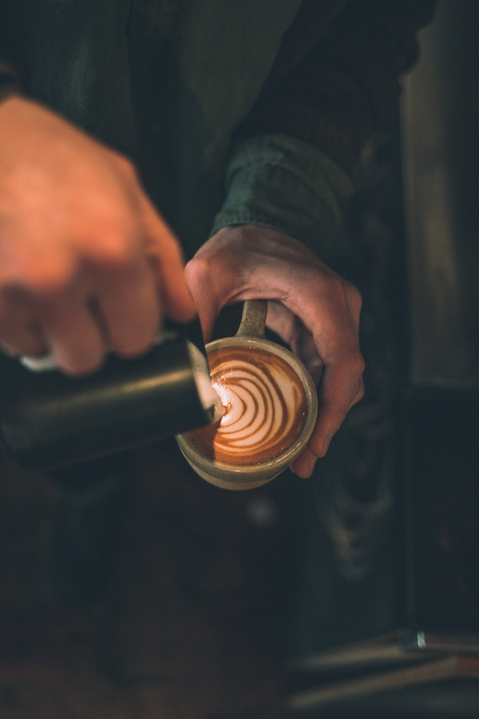
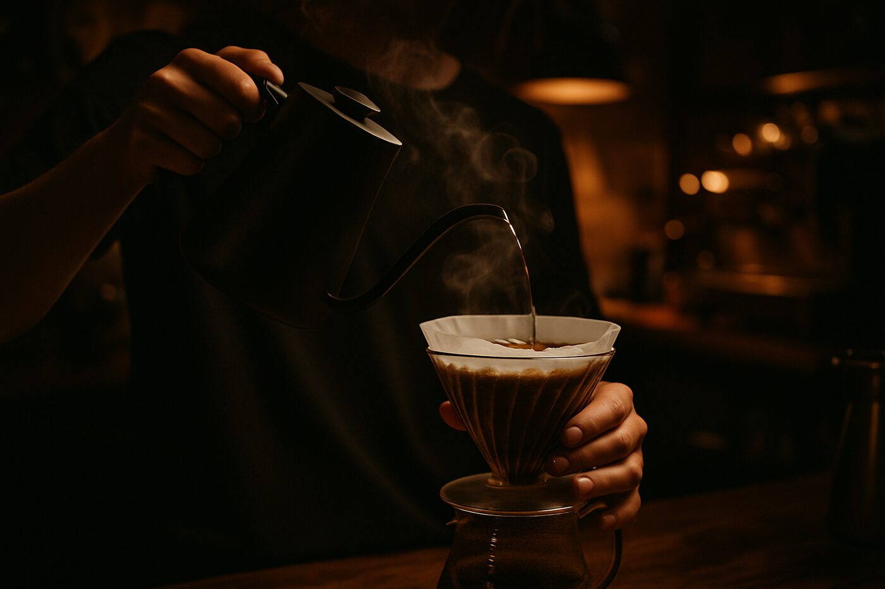

CHAPTER 01
The Beans
— 麻袋ひとつ分の、世界。
ひと袋に、産地の風と土と、農園の手仕事が詰まっている。
私たちが選ぶのは、その年最も状態の良い豆だけ。
SCAA評価80点以上のスペシャルティコーヒーを、
世界6ヵ国の信頼できる農園から、少量ずつ。
— A morning, slowed down.
自家焙煎スペシャルティコーヒー専門店
Café Noir ／ Tokyo, Harajuku ／ Since 2018
— 麻袋ひとつ分の、世界。
ひと袋に、産地の風と土と、農園の手仕事が詰まっている。
私たちが選ぶのは、その年最も状態の良い豆だけ。
SCAA評価80点以上のスペシャルティコーヒーを、
世界6ヵ国の信頼できる農園から、少量ずつ。

— Director's Note
"豆は、すべてを
知っている。"
— We just listen.
15年間、東京のスペシャルティコーヒー店で焙煎を続けてきました。
独立して自分の店を持つとき、決めていたのは
「コーヒーだけを売らない」こと。
お客様が一杯を飲み終えるまでの時間そのものを、
丁寧にお渡しできる場所でありたい。
佐藤 健一 ／ Roaster, Café Noir
— 色の正解は、豆が知っている。
一粒の豆と、向き合う時間がある。
しわの深さ、油のにじみ、艶の有無。
その日の焙煎の正解を教えてくれるのは、
機械ではなく、目の前の一粒。

持ち帰る、
静かなひととき。
店内と同じ豆、同じ手間。
器を変えても、味は変わらない。
あなたの一日に、Café Noirを連れて。
¥620 / TAKEAWAY
— 一杯ずつ、丁寧に。
注文ごとに、ハンドドリップで丁寧に。
お湯の温度は92℃、注ぎ方、待ち時間。
同じ豆でも、淹れ方ひとつで表情が変わる。
最高の状態であなたへ届けるための、3分間。
扉を開けると、深煎りの香りが迎える。
原宿の路地、6席だけの小さな焙煎所兼カフェ。
取材・卸問い合わせ・カッピング会のお申し込みなど、
こちらからお気軽にお寄せください。